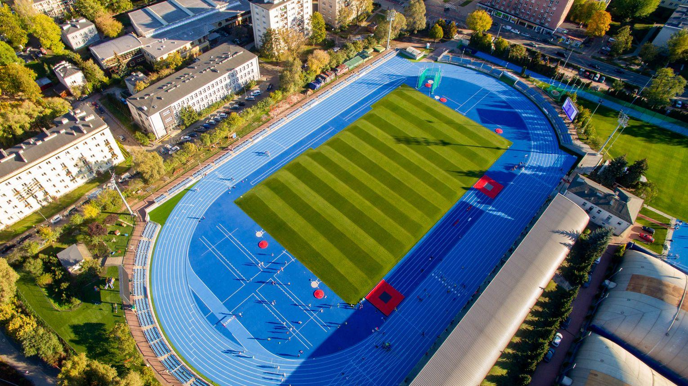
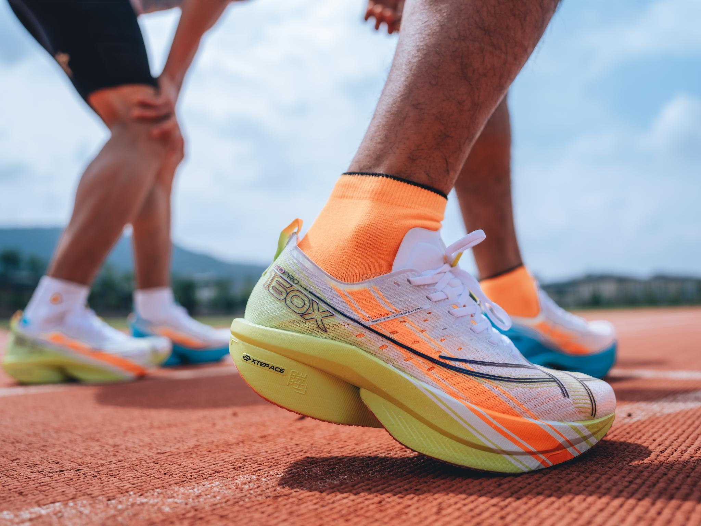
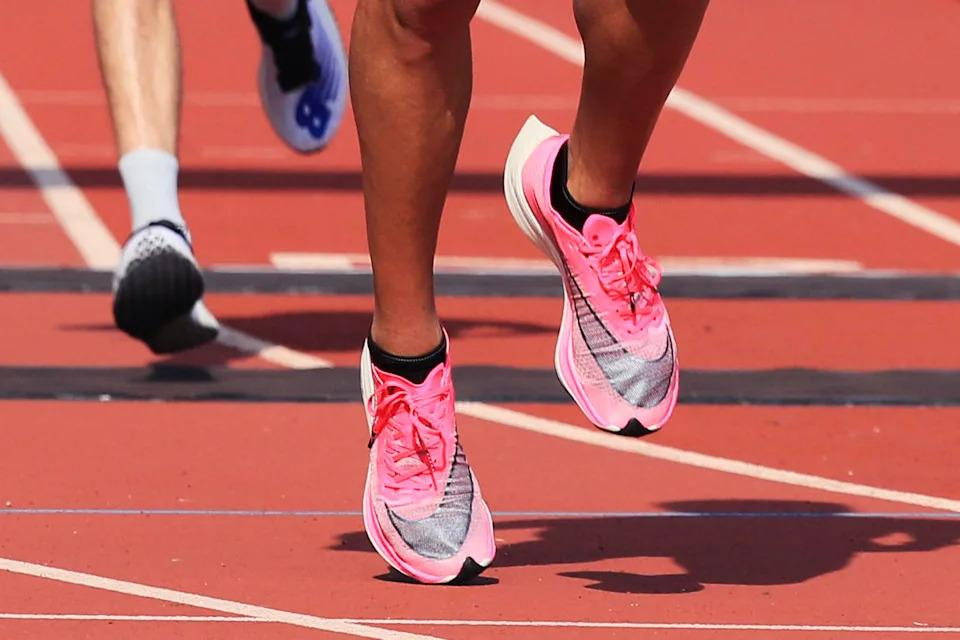
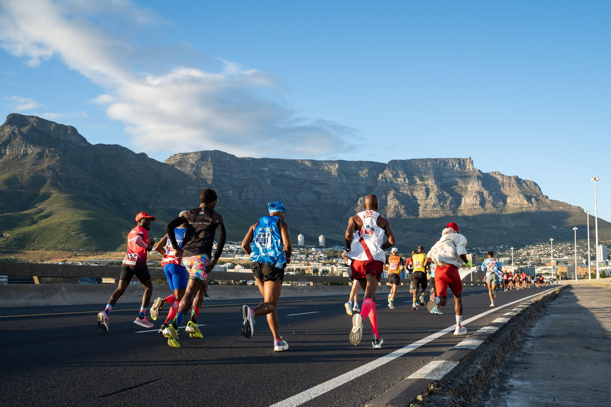
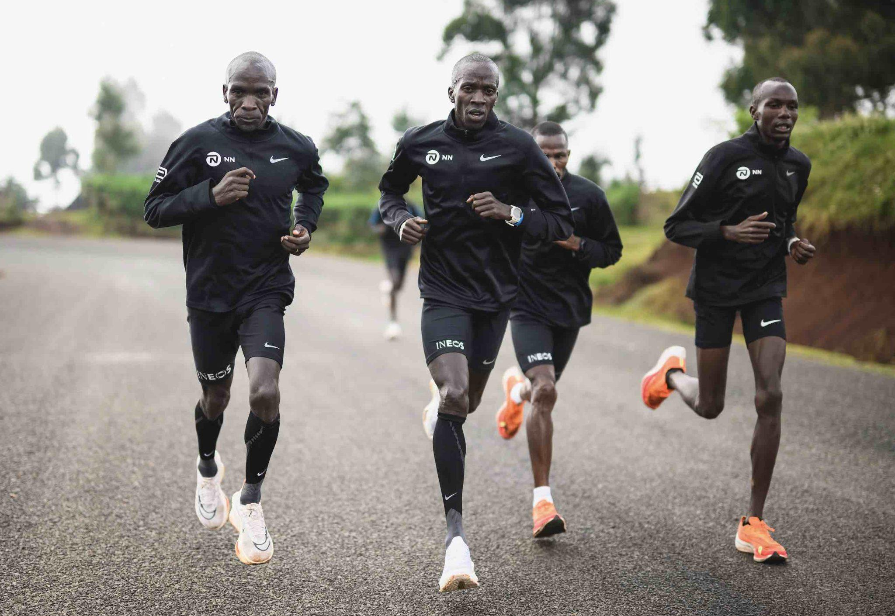
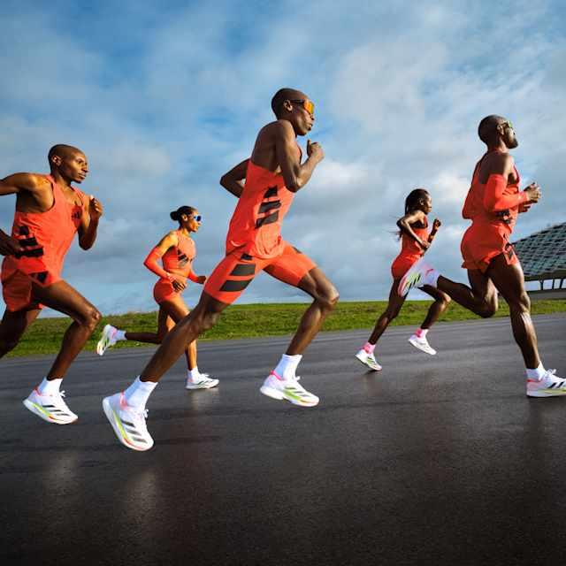

6–8 WEEKS
First 5K
Build a running habit, develop easy endurance and arrive at your first start line feeling prepared.
Enquire now ↗
A clear pathway for your first 5K, your next personal best or your biggest endurance goal.
Our programs are built around gradual progression, consistency and recovery. Your coach will tailor the pace and workload to your current fitness.
Build a running habit, develop easy endurance and arrive at your first start line feeling prepared.
Enquire now ↗
Build aerobic fitness, pacing confidence and the endurance to cover more distance comfortably.
Enquire now ↗
A progressive long-run structure with fueling practice, recovery and race-week preparation.
Enquire now ↗Every program balances different types of work. Your coach will set the right mix for your goal and experience.
Comfortable conversational miles that build mitochondrial density, capillary beds and an unshakeable aerobic base.
Coach-calibrated track intervals, threshold tempos and progressive fartleks to raise your lactate clearance ceiling.
Targeted single-leg stability, hip hinge mobility and core strength circuits to bulletproof against common overuse injuries.
Active mobility protocols, structured down-weeks and sleep hygiene guidance to absorb stress and trigger true supercompensation.
A sample training week might combine easy running, one focused workout, strength and a longer session. The exact schedule depends on your goal, experience and recovery needs.
Volume scaled precisely to your current fitness, avoiding sudden spikes and burnout risks.
Training modules designed to flex around busy professional schedules, family time and travel.
Continuous feedback, heart-rate pacing adjustments and progress reviews with your coach.
Get a plan that fits the runner you are becoming.
Build my plan ↗

Build the confidence to cover more distance with progressive long runs, manageable weekly goals and a coach who helps you stay consistent.
Great runners build more than speed. Learn to balance training load, strength, rest and the small habits that help you keep showing up.
Runner-focused resistance work, single-leg stability and hip activation to build durable tendons and maintain clean posture through the late miles.
Intentional recovery windows, foam rolling and nervous system rest so muscular adaptations lock in before your next hard workout.
Weekly coach check-ins and split analysis to calibrate mileage targets, workout pacing and volume around your life and energy levels.
Compare our 3 signature seasonal curriculums. From foundational aerobic capacity to sub-3 marathon peak volume, every program features calibrated weekly load caps and coach accountability checkpoints.
 TIER 1 / FOUNDATION
TIER 1 / FOUNDATION
For runners establishing an enduring cardiovascular base, injury-free mechanics, and joyful regular consistency.

TIER 2 / ENDURANCE MASTERYComprehensive endurance block targeting sub-3:30 / sub-4:00 marathoners with progressive long runs, glycogen pacing, and fueling protocol.

TIER 3 / HIGH PERFORMANCEFor competitive club racers chasing sub-18 5K, sub-38 10K, or Boston Qualifier standards through threshold velocity work.